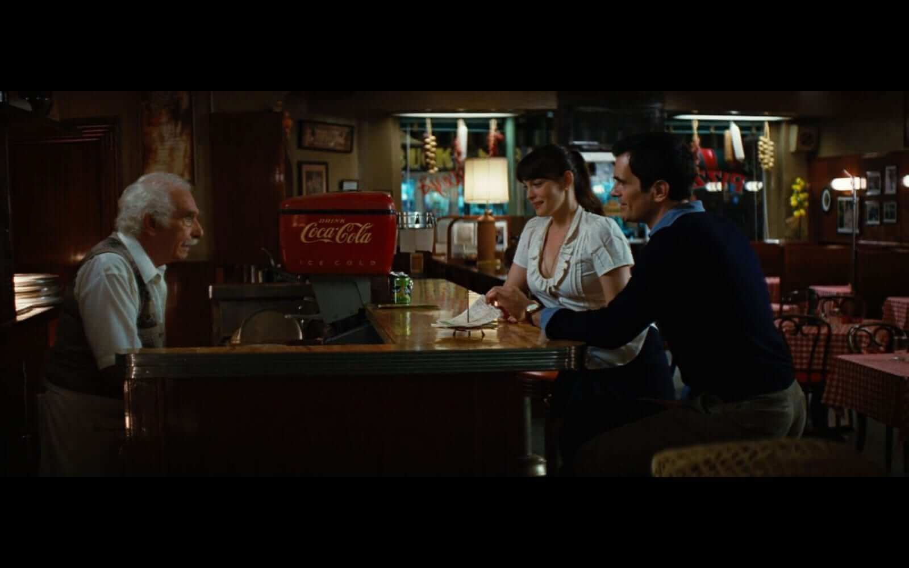
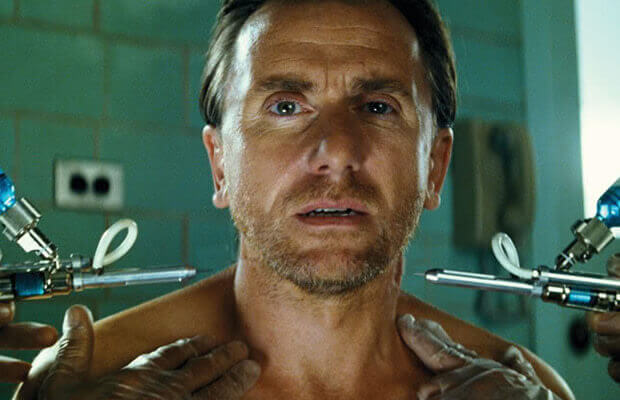
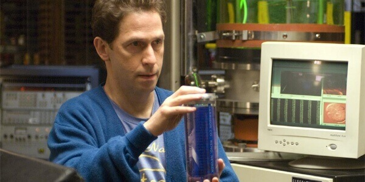
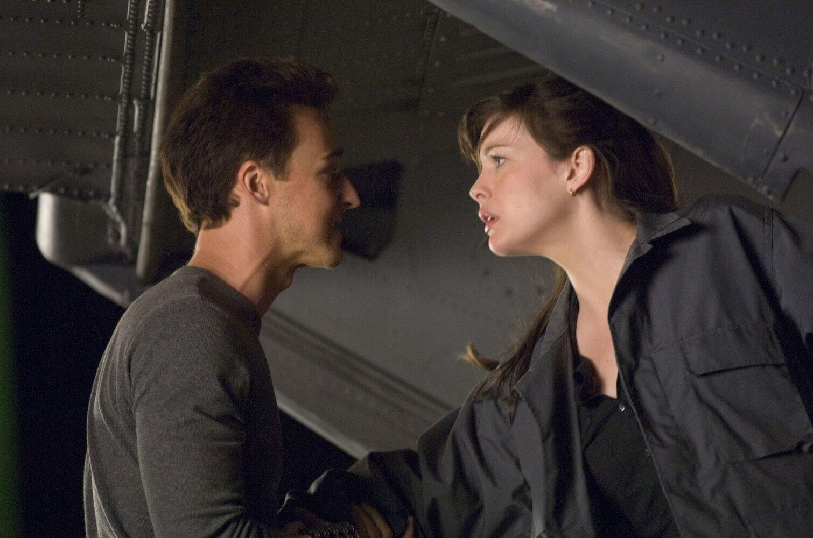
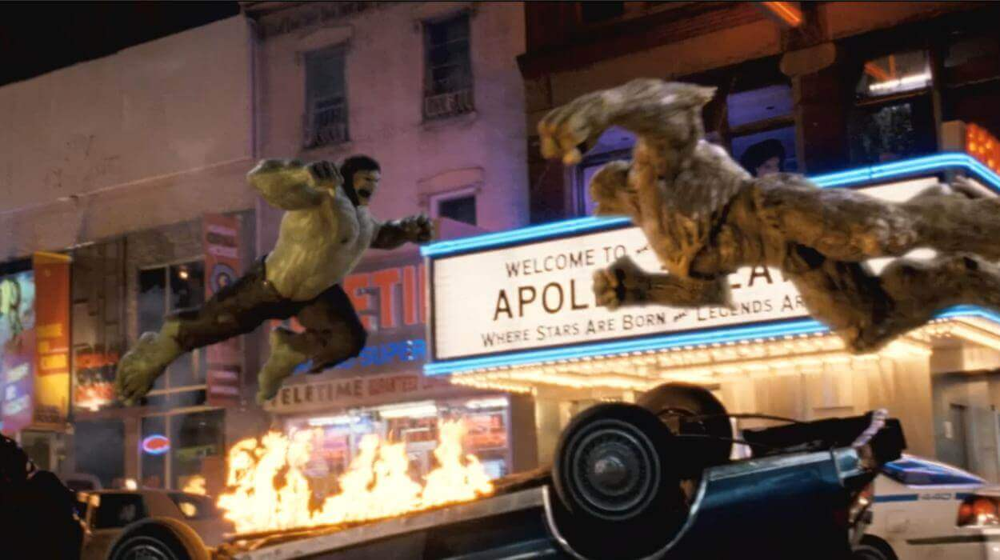
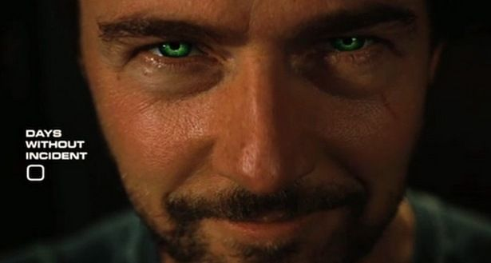
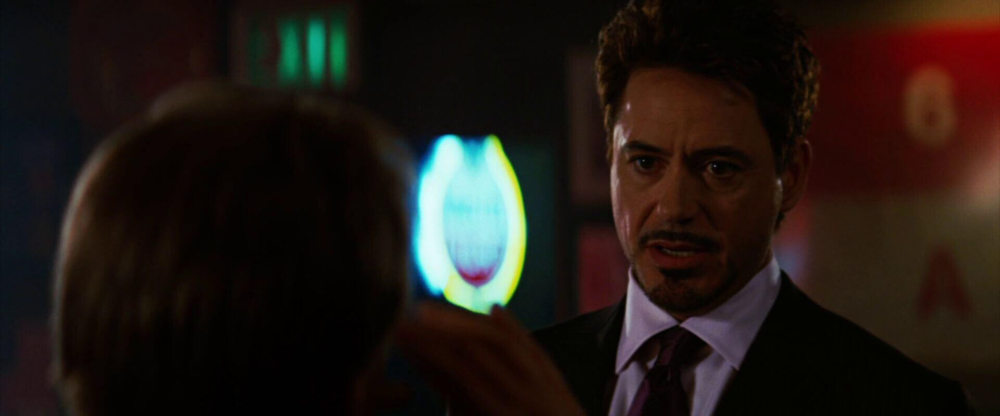

The Incredible Hulk
"[Speaking Portuguese badly] Don't make me... hungry. You wouldn't like me when I'm hungry. [Pause, in English] Wait, that's not right."
-Bruce Banner, 2008

What am I getting myself into?
Take a look at the movie's trailer for a sneak peak.

Whose stories are told in this chapter?
Get to know the important characters appearing in this movie.

So what really happened here?
Check out the synopsis to get an overview of what took place in this film.

Now where do we go?
Think of the post credits scene as dessert to your 5-star meal.
Bruce Banner recalls the events in which he was transformed into a monster and hospitalized his lover Betty Ross. Ross' father, General Thaddeus Ross, forced Banner to go on the run for years, as he is now a fugitive of the United States Army. Banner finds a home in Rocinha, Brazil, where he works at a soft drink bottling factory and has learned breathing techniques and martial arts to ward off his transformations. He is trying to find a cure with the help of "Mr. Blue", whom he met online. Banner has not had an "incident" for 5 months.
When Banner has a cut, his blood drips into a bottle at the factory and is ingested by an ill-fated consumer in Milwaukee, Wisconsin. Ross uses this incident to pick up on Banner's trail and sends British special-ops expert Emil Blonsky with an attack team to capture Banner. Banner then makes an escape to the bottling factory he works in. During the run, he bumps into a gang of thugs, one who was his former enemy at the bottling factory. During the confrontation, Banner transforms into the Hulk at the bottling factory and takes out the thugs and everyone on the team.
Before the Hulk escapes, Blonsky, the last soldier alive, takes a good look at the Hulk, before Hulk throws a forklift truck at him, which he barely survives. Banner escapes and goes to Guatemala, and then the US, where he finds the now recovered Betty Ross at Culver University, dating psychiatrist Leonard Samson. Banner's friend Stanley Lieber (a pizzeria owner) gives him a job as a delivery boy. He uses this job to continue his research by sneaking past a security guard at the university. Ross sees Banner at the pizzeria, and they later reunite.
Ross is informed by Blonsky that Banner escaped because of a green monster. Ross continues to explain that Banner was the monster, created by a failed experiment meant to replicate the "Super-Soldier" program. Blonsky volunteers to be given a small dose of an altered Super Soldier serum (another failed experiment but considered "very promising") that increases his strength and agility. Blonsky leads a second attack on Banner at Culver University, where he and his team encounter the Hulk and are defeated. Hulk saves Ross from an explosion and he takes her to the Smoky Mountain National Forest.
Banner and Ross go to Grayburn College in New York City to meet Mr. Blue, who is revealed to be Samuel Sterns. Sterns invented a potential antidote, and Banner accepts it, despite the risks. Banner is restrained and a transformation is induced, but was successfully reversed through Sterns' antidote. Sterns revealed that he synthesized Banner's blood into a large supply, in hopes of using it in the next stage of human evolution. While Banner tries to convince him otherwise, he is suddenly tranquilized by one of Ross' snipers.
Ross and Banner are taken into custody, while Blonsky confronts Sterns and asks him to give him a sample of Banner's blood to add to his power. Sterns warns that the Super Soldier serum and Gamma Radiation together could create an "abomination", but Blonsky doesn't change his mind. The procedure transforms Blonsky into a Hulk-like monster who knocks Sterns into a sample of Banner's blood, and goes on a rampage through Harlem looking for something that could challenge his new strength as well as to lure Hulk out.
Despite his fears that he has cured himself of Hulk permanently, Banner is given permission to fight Blonsky and jumps from General Ross' helicopter in an attempt to re-trigger his transformations. Banner emerges from a crater in the street below as Hulk, and proceeds to face Blonsky. Hulk manages to defeat Blonsky after a lengthy, destructive and harsh fight while also protecting Betty and General Ross, who had been put in harm's way, but is again forced to run from the US Army.
Thirty one days later, Banner is in Bella Coola, British Columbia trying to learn how to control his transformations, instead of curing them.
Later, General Ross is in a bar, where Tony Stark then confronts Ross and talks about a "team" being made.